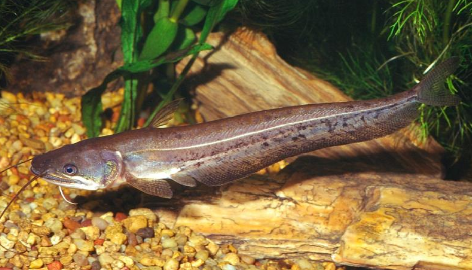
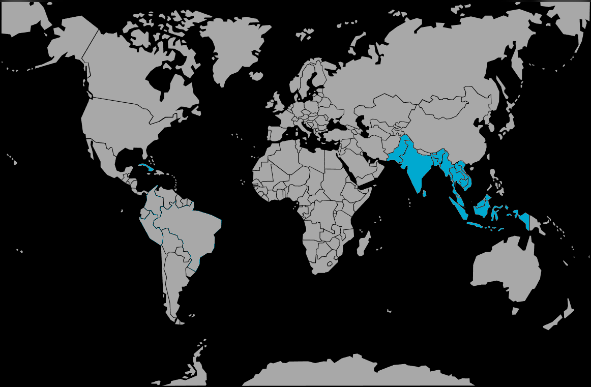

Systématique
- Ordre : Siluriformes
- Famille : Siluridae
- Genre : Wallago
- Espèce : W. attu

Wallago attu est un silure géant d'eau douce, largement répandu en Asie du Sud et du Sud-Est. Il est connu sous divers noms vernaculaires comme "Tapah" en Malaisie ou "Boal" au Bangladesh. C'est l'une des plus grandes espèces de la famille des Siluridae.
Il peut atteindre des dimensions impressionnantes : les records historiques mentionnent des spécimens de 2,40 mètres, bien que la plupart des individus observés de nos jours mesurent entre 1 mètre et 1,50 mètre. Son corps est très allongé, fortement comprimé latéralement, avec une nageoire anale extrêmement longue qui court jusqu'à la queue, tandis que la dorsale est minuscule.
Sa gueule est immense, fendue jusqu'à l'arrière des yeux, et garnie de rangées de dents pointues et recourbées vers l'arrière, conçues pour saisir et ne plus lâcher ses proies. C'est un prédateur redoutable.
C'est un poisson pélagique et démersal, nageant activement à la recherche de proies. Il est solitaire et extrêmement territorial.
D'une voracité légendaire, il est capable d'engloutir des proies de taille considérable. En aquarium (réservé aux installations publiques ou géantes), il est impossible de le faire cohabiter avec des poissons qu'il peut avaler ou blesser. Il est même agressif envers ses congénères. Il est principalement nocturne mais peut chasser le jour s'il est stimulé.
Mode : ovipare.
C'est une espèce potamodrome (migratrice en eau douce). Dans la nature, la reproduction est saisonnière et liée à la mousson. Les adultes migrent vers les plaines inondables et les rivières peu profondes pour frayer pendant la saison des pluies.
La reproduction n'est pas réalisable en aquarium domestique standard en raison de la taille des géniteurs et de la nécessité de migrations simulées. Elle est pratiquée en pisciculture en Asie pour l'alimentation.
Dimorphisme sexuel : Peu évident extérieurement. Les femelles matures sont généralement plus lourdes et plus larges au niveau de l'abdomen que les mâles.
Espérance de vie : Peut dépasser 10 à 15 ans, voire davantage dans la nature.
Il occupe une vaste aire de répartition allant du Pakistan au Vietnam et à l'Indonésie. Il fréquente les grands fleuves, les lacs, les réservoirs et les canaux profonds.
Il préfère les eaux boueuses ou limoneuses avec un fond mou, où il peut chasser à l'affût ou en patrouille. Il tolère des eaux faiblement oxygénées et des conditions environnementales assez variables.
Répartition

Origine naturelle :
- Asie du Sud (Inde, Pakistan, Bangladesh, Sri Lanka).
- Asie du Sud-Est (Thaïlande, Laos, Cambodge, Vietnam).
- Indonésie (Sumatra, Java, Bornéo).
- Malaisie.
Paramètres de maintenance
Température : 20 à 30 °C.
pH : 6,0 à 8,0.
GH : 5 à 25 °dGH.
Volume conseillé : Minimum 5000 à 10 000 litres pour un spécimen adulte. Ce n'est pas un poisson pour l'aquariophilie domestique classique, mais pour les aquariums publics ou les étangs intérieurs chauffés.
Régime alimentaire
Régime : carnivore / piscivore strict.
Dans la nature, il se nourrit principalement de poissons, mais aussi de crustacés, de grenouilles et d'oiseaux aquatiques.
En captivité, il nécessite des proies entières (poissons morts ou vivants, filets de poisson, calamars). Sa croissance est très rapide si la nourriture est abondante.